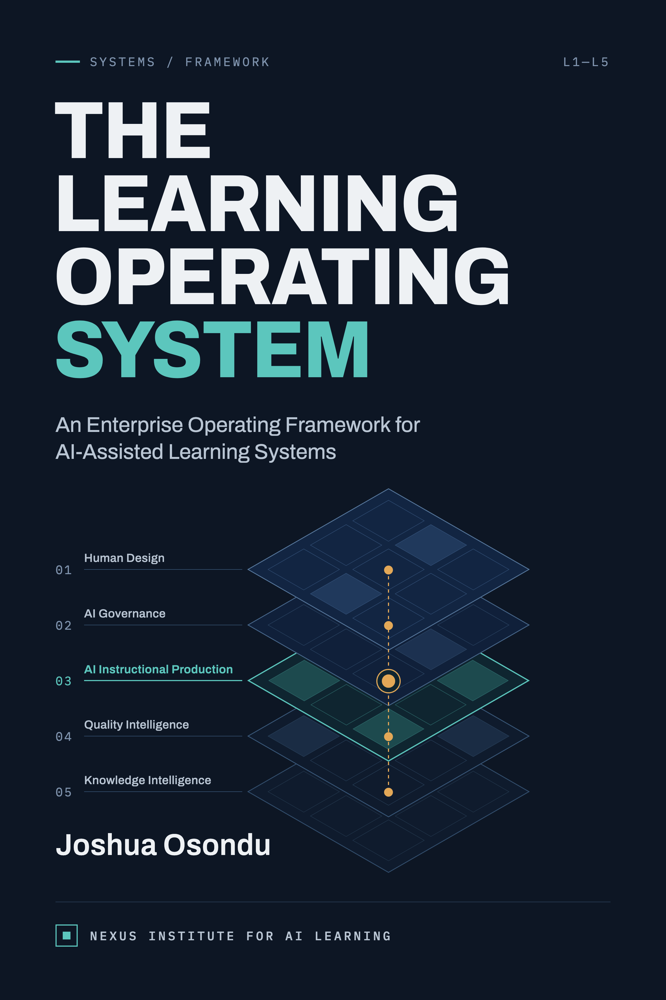

The Learning Operating System
An Enterprise Operating Framework for AI-Assisted Learning Systems
Artificial intelligence has made instructional production faster, but it has also exposed a challenge technology alone cannot solve: organizations need a consistent way to govern AI-assisted instructional work, coordinate human and AI responsibilities, maintain instructional quality, preserve organizational knowledge, and improve continuously across projects.
The Learning Operating System introduces the Human–AI Instructional Design Operating System (IDOS), an enterprise operating framework built around five coordinated engines, Human Design, AI Governance, AI Instructional Production, Quality Intelligence, and Knowledge Intelligence, that lets organizations integrate AI into instructional work systematically, responsibly, and sustainably, without replacing established instructional design methodologies or human professional judgment.
The five operational engines
IDOS coordinates the complete instructional lifecycle through five engines, each with a distinct responsibility and a shared enterprise architecture.
Human Design
Instructional intent, outcomes, strategy, and assessment requirements.
AI Governance
Policies, operating rules, and oversight for Human–AI collaboration.
AI Production
AI-supported production of instructional resources under human supervision.
Quality Intelligence
Instructional quality, accessibility, and implementation-readiness validation.
Knowledge Intelligence
Organizational learning, reusable knowledge, and continuous improvement.
Citation
Please cite this work as follows when referencing IDOS or this book in academic, institutional, or professional contexts.
Osondu, J. (2026). The Learning Operating System: An Enterprise Operating Framework for Human–AI Learning Systems (Version 1.0). Nexus Institute for AI Learning, Inc.
About this publication
AI use in production: Consistent with the governance principles this book advocates, an AI Use and Responsibility Statement disclosing how generative AI tools supported this book's research, drafting, and editorial refinement is included in the book's front matter.
Applied case studies: The case studies in Chapters 10 and 11 are composites synthesized from common, well-documented organizational patterns and do not describe any single real organization, individual, or event.
Not compliance guidance: This book presents a proposed enterprise framework for organizational and educational use. It is not legal, compliance, or regulatory guidance. Regulatory figures and policy references reflect publicly available information at the time of writing and may change.
For permissions, licensing, or bulk-order inquiries, contact info@niail.org.